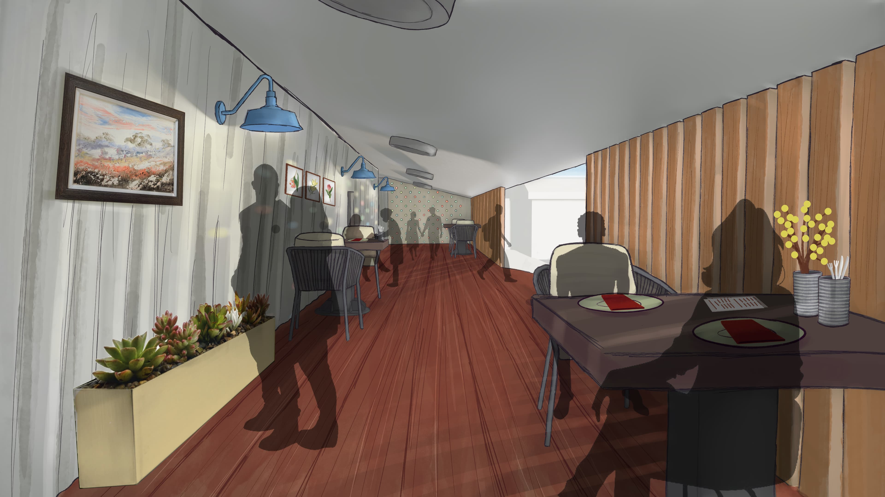
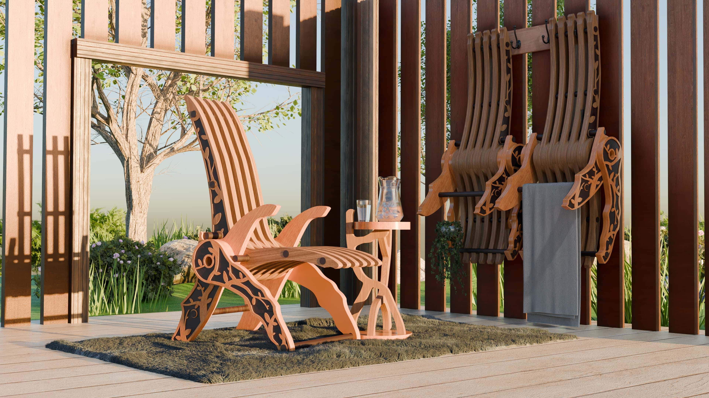

Jackson Powell
Welcome to my showcase of personal and professional work



Selected Work
Portfolio Showcase
Games, interface design, cinematic presentation, interaction systems, and experimental digital work.
View PortfolioAbout Me
Hi, I'm Jackson
A passion-filled 3D designer and game artist.